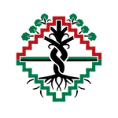
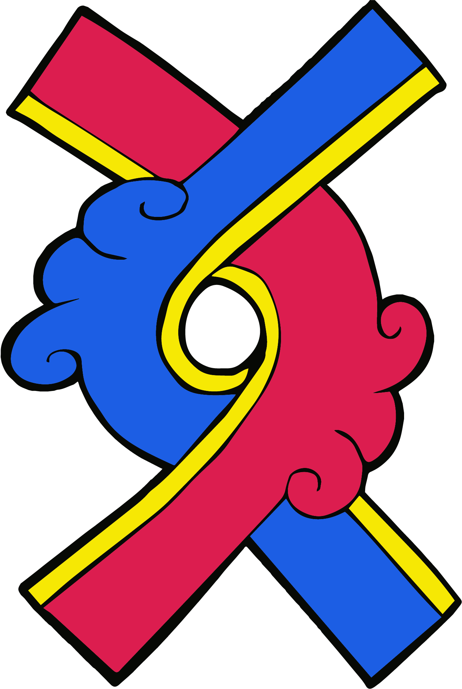

<!DOCTYPE html>
<html lang="en">
<head>
  <meta charset="UTF-8" />
  <meta name="viewport" content="width=device-width, initial-scale=1.0" />
  <title>Culture Heals in Crisis — A Reflective Practice</title>
  <link rel="preconnect" href="https://fonts.googleapis.com" />
  <link href="https://fonts.googleapis.com/css2?family=Merriweather:wght@700;900&family=Open+Sans:wght@400;600;700&display=swap" rel="stylesheet" />
  <script src="https://cdnjs.cloudflare.com/ajax/libs/react/18.2.0/umd/react.production.min.js"></script>
  <script src="https://cdnjs.cloudflare.com/ajax/libs/react-dom/18.2.0/umd/react-dom.production.min.js"></script>
  <script src="https://cdnjs.cloudflare.com/ajax/libs/babel-standalone/7.23.2/babel.min.js"></script>
  <style>
    :root{
      --bg-cream:#f2ece4;
      --bg-card:#ffffff;
      --bg-slate:#3a4550;
      --bg-dark:#1a1a1a;
      --accent-red:#9a3b2f;
      --accent-red-hover:#b84535;
      --accent-red-light:#c05d4f;
      --text-dark:#2a2a2a;
      --text-medium:#555;
      --text-light:#888;
      --border-light:#d8d0c4;
      --border-medium:#b8b0a4;
    }
    *{box-sizing:border-box;margin:0;padding:0}
    body{font-family:'Open Sans',sans-serif;min-height:100vh;background:var(--bg-cream);color:var(--text-dark);padding:0}

    /* HEADER BAR */
    .top-bar{background:var(--bg-slate);padding:20px 16px;text-align:center}
    .logo-area{display:flex;justify-content:center;align-items:center;gap:24px;min-height:90px}
    .logo-area img{max-height:90px;width:auto}
    /* ── WEBSITE LINK ── Replace href="#" with your website URL */
    .site-link{display:block;text-align:center;font-size:.75rem;color:#b0bcc9;margin-top:6px;text-decoration:none;transition:color .2s;letter-spacing:.05em}
    .site-link:hover{color:#fff}

    .container{max-width:620px;margin:0 auto;padding:28px 16px 60px}

    .title-block{text-align:center;margin-bottom:28px}
    .title-block h1{font-family:'Merriweather',serif;font-size:1.9rem;color:var(--accent-red);line-height:1.2;margin-bottom:8px;font-weight:900}
    .title-block .sub{font-size:.88rem;color:var(--text-medium);max-width:440px;margin:0 auto;line-height:1.5}

    .dots{display:flex;justify-content:center;gap:6px;margin-bottom:20px;flex-wrap:wrap;padding:0 8px}
    .dot{width:9px;height:9px;border-radius:50%;background:var(--border-light);border:2px solid var(--border-medium);transition:all .3s;flex-shrink:0}
    .dot.active{background:var(--accent-red);border-color:var(--accent-red);transform:scale(1.3)}
    .dot.done{background:#7a9e6b;border-color:#7a9e6b}
    .icon-holder{display:flex;justify-content:center;align-items:center;width:100%;min-height:36px;margin:0 auto -8px;opacity:1}
    .icon-holder img{max-height:36px;width:auto;display:block;margin:0 auto}

    .card{background:var(--bg-card);border:1px solid var(--border-light);border-radius:16px;padding:28px 24px;max-width:580px;margin:0 auto;box-shadow:0 4px 20px rgba(58,69,80,.08);position:relative}

    .back-btn{background:transparent;border:1px solid var(--border-light);border-radius:24px;padding:8px 16px;color:var(--text-medium);font-family:'Open Sans',sans-serif;font-size:.78rem;cursor:pointer;transition:all .2s;font-weight:600;margin-top:14px;align-self:flex-start}
    .back-btn:hover{border-color:var(--accent-red);color:var(--accent-red)}

    .slabel{font-size:.7rem;letter-spacing:.15em;text-transform:uppercase;color:var(--accent-red);margin-bottom:10px;font-weight:700}

    .card h2{font-family:'Merriweather',serif;font-size:1.45rem;color:var(--bg-slate);margin-bottom:16px;line-height:1.35;font-weight:700}
    .card p{font-size:.95rem;color:var(--text-dark);line-height:1.7;margin-bottom:14px}

    .scene-box{background:#faf5ee;border-left:4px solid var(--accent-red);border-radius:0 10px 10px 0;padding:16px 18px;margin:14px 0;font-size:.94rem;color:var(--text-dark);line-height:1.7}
    .scene-lbl{display:block;font-size:.68rem;color:var(--accent-red);font-weight:700;text-transform:uppercase;letter-spacing:.14em;margin-bottom:8px}

    .reflect-q{font-family:'Merriweather',serif;font-size:1.08rem;color:var(--bg-slate);margin:18px 0 12px;line-height:1.5;font-style:italic;font-weight:700}

    textarea{width:100%;min-height:100px;background:#fafafa;border:1px solid var(--border-light);border-radius:10px;padding:14px;color:var(--text-dark);font-family:'Open Sans',sans-serif;font-size:16px;line-height:1.6;resize:vertical;display:block;transition:border-color .2s;-webkit-appearance:none}
    textarea:focus{outline:none;border-color:var(--accent-red);background:#fff}
    textarea::placeholder{color:var(--text-light);font-style:italic}

    .wc{font-size:.75rem;color:var(--text-light);text-align:right;margin-top:4px}

    .skip-btn{display:block;text-align:center;margin-top:10px;font-size:.82rem;color:var(--text-light);cursor:pointer;text-decoration:underline;background:none;border:none;font-family:'Open Sans',sans-serif;width:100%;transition:color .2s;padding:6px}
    .skip-btn:hover{color:var(--accent-red)}

    .approach-list{display:flex;flex-direction:column;gap:10px;margin:16px 0}
    .abtn{background:#fafafa;border:1px solid var(--border-light);border-radius:10px;padding:14px 16px;color:var(--text-dark);font-family:'Open Sans',sans-serif;font-size:.92rem;cursor:pointer;transition:all .2s;text-align:left;line-height:1.55;width:100%}
    .abtn:hover:not([disabled]){border-color:var(--accent-red);background:#fff;transform:translateX(3px);box-shadow:0 2px 10px rgba(154,59,47,.12)}
    .abtn[disabled]{cursor:default;opacity:.55;transform:none}
    .abtn.chosen{border-color:var(--accent-red)!important;background:#fdf4f2!important;opacity:1!important;box-shadow:0 2px 10px rgba(154,59,47,.15)}

    .atag{display:inline-block;font-size:.65rem;letter-spacing:.12em;text-transform:uppercase;font-weight:700;padding:3px 10px;border-radius:4px;margin-bottom:8px}
    .t-mental{background:#dce8ef;color:#3a5a72}
    .t-physical{background:#e8dfce;color:#6b5530}
    .t-emotional{background:#ecd8e0;color:#7a3a52}
    .t-spiritual{background:#dae4d0;color:#4a6038}

    .own-toggle{width:100%;background:transparent;border:1px dashed var(--border-medium);border-radius:10px;padding:13px 16px;color:var(--text-medium);font-family:'Open Sans',sans-serif;font-size:.88rem;cursor:pointer;transition:all .2s;text-align:left;line-height:1.5;font-style:italic}
    .own-toggle:hover{border-color:var(--accent-red);color:var(--accent-red);background:#fdf4f2}

    .pv-intro{background:#faf5ee;border:1px solid var(--border-light);border-radius:8px;padding:12px 14px;margin-bottom:16px;font-size:.82rem;color:var(--text-medium);font-style:italic;line-height:1.55}
    .pv-intro strong{color:var(--accent-red);font-style:normal}

    .mentor-box{background:#faf5ee;border:1px solid var(--border-light);border-left:4px solid var(--accent-red);border-radius:0 10px 10px 0;padding:24px 20px 18px;margin:18px 0;animation:fadeIn .5s;position:relative}
    .mentor-mark{position:absolute;top:-11px;left:18px;background:var(--accent-red);color:#fff;font-size:.64rem;font-weight:700;padding:4px 12px;border-radius:4px;letter-spacing:.14em;text-transform:uppercase}
    .mentor-text{color:var(--text-dark);font-size:.96rem;line-height:1.8;font-family:'Merriweather',serif;margin-bottom:14px}
    .mentor-note{color:var(--text-medium);font-size:.85rem;line-height:1.65;font-family:'Open Sans',sans-serif;font-style:italic;padding-top:14px;border-top:1px solid var(--border-light)}

    @keyframes fadeIn{from{opacity:0;transform:translateY(8px)}to{opacity:1;transform:translateY(0)}}

    .btn{display:block;width:100%;padding:14px;background:var(--accent-red);border:none;border-radius:28px;color:#fff;font-family:'Open Sans',sans-serif;font-size:.98rem;font-weight:700;cursor:pointer;transition:all .2s;margin-top:18px;letter-spacing:.03em}
    .btn:hover:not([disabled]){background:var(--accent-red-hover);transform:translateY(-1px);box-shadow:0 4px 14px rgba(154,59,47,.3)}
    .btn[disabled]{background:var(--border-medium);color:#fff;cursor:not-allowed;transform:none;box-shadow:none;opacity:.7}

    .btn.outline{background:transparent!important;border:1px solid var(--border-medium)!important;color:var(--text-medium)!important;font-size:.86rem!important;padding:11px!important;margin-top:12px!important;box-shadow:none!important;transform:none!important}
    .btn.outline:hover{border-color:var(--accent-red)!important;color:var(--accent-red)!important}

    .tip{background:#faf5ee;border:1px solid var(--border-light);border-radius:8px;padding:14px 16px;font-size:.87rem;color:var(--text-medium);line-height:1.65;margin:16px 0}
    .tip strong{color:var(--accent-red)}
    .tip em{color:var(--bg-slate);font-style:normal;font-weight:600}
    .movement-tip{position:relative;padding-left:52px}
    .tip-icon-holder{display:block;position:absolute;top:50%;left:14px;transform:translateY(-50%);min-height:28px;min-width:28px;display:flex;align-items:center;justify-content:center}
    .tip-icon-holder img{max-height:28px;width:auto;display:block}

    .dg{display:grid;grid-template-columns:1fr 1fr;gap:10px;margin:16px 0}
    .dc{background:#faf5ee;border:1px solid var(--border-light);border-radius:10px;padding:14px}
    .dc .dn{font-weight:700;color:var(--accent-red);font-size:.98rem;margin-bottom:5px;font-family:'Merriweather',serif}
    .dc .dd{font-size:.82rem;color:var(--text-medium);line-height:1.5}

    .trow{display:flex;gap:14px;align-items:flex-start;background:#faf5ee;border:1px solid var(--border-light);border-radius:10px;padding:16px 18px;margin-bottom:10px}
    .trow .tnum{font-family:'Merriweather',serif;font-size:1.4rem;color:var(--accent-red);font-weight:900;flex-shrink:0;min-width:28px}
    .trow .ttxt{font-family:'Merriweather',serif;font-size:1.02rem;color:var(--bg-slate);line-height:1.45;font-weight:700}

    .valores-grid{display:grid;grid-template-columns:1fr 1fr;gap:10px;margin:16px 0}
    .valor-card{background:#faf5ee;border:1px solid var(--border-light);border-radius:10px;padding:16px 12px;text-align:center}
    .valor-es{font-family:'Merriweather',serif;font-size:1.2rem;color:var(--accent-red);font-weight:900;margin-bottom:4px;letter-spacing:.02em}
    .valor-en{font-size:.8rem;color:var(--text-light);font-style:italic;margin-bottom:8px}
    .valor-desc{font-size:.8rem;color:var(--text-medium);line-height:1.5}

    .pause-card{background:var(--bg-slate);border-radius:12px;padding:32px 24px;margin:16px 0;text-align:center}
    .pause-card .pt{font-family:'Merriweather',serif;font-style:italic;color:#fff;font-size:1.15rem;line-height:1.55;font-weight:700}

    .recap{background:#f7f2ea;border:1px solid var(--border-light);border-radius:8px;padding:14px 16px;margin:12px 0}
    .rlbl{font-size:.68rem;letter-spacing:.12em;color:var(--accent-red);font-weight:700;text-transform:uppercase;margin-bottom:6px}
    .rq{font-family:'Merriweather',serif;font-style:italic;color:var(--text-dark);font-size:.93rem;line-height:1.55}

    .divider{border:none;border-top:1px solid var(--border-light);margin:20px 0}
    .trow2{display:flex;align-items:flex-start;gap:10px;margin-bottom:12px}

    .pv-closing{font-family:'Merriweather',serif;font-size:1.15rem;color:var(--accent-red);font-style:italic;text-align:center;margin:22px 0;line-height:1.7;padding:20px;border-top:1px solid var(--border-light);border-bottom:1px solid var(--border-light);font-weight:700}

    .ritual-mark{text-align:center;font-family:'Merriweather',serif;font-size:1.4rem;color:var(--accent-red);letter-spacing:.4em;margin:16px 0;font-weight:900}

    .bendiciones{font-family:'Merriweather',serif;font-size:1.35rem;color:var(--accent-red);font-style:italic;text-align:center;margin-top:22px;font-weight:900;letter-spacing:.03em}

    @media(max-width:460px){.dg,.valores-grid{grid-template-columns:1fr}}
    .footer{text-align:center;padding:24px 16px 16px;margin-top:32px;border-top:1px solid var(--border-light);font-size:.78rem;color:var(--text-light);line-height:1.5}
    .footer a{color:var(--accent-red);text-decoration:none}
    .footer a:hover{text-decoration:underline}
  </style>
</head>
<body>
<div id="root"></div>
<script type="text/babel">
const {useState,useEffect} = React;

const SC = [
  {
    id:"cousin",
    label:"Office Encounter",
    scene:"A young man in your community just learned his cousin was killed. He shows up at your office, pacing, barely speaking. His eyes are distant. He hasn't eaten and doesn't know where he'll sleep tonight.",
    rq:"Before deciding what to do — what do you notice in him? What is he carrying right now?",
    ctx:"He's standing in front of you. The silence between you matters. You only get one chance to open this door without it slamming shut.",
    opts:[
      {tag:"MENTAL",   tc:"t-mental",    txt:'"Talk to me — what\'s going through your head right now?"',                         p:false},
      {tag:"PHYSICAL", tc:"t-physical",  txt:'"When did you last eat? You got somewhere safe to stay tonight?"',                   p:true},
      {tag:"EMOTIONAL",tc:"t-emotional", txt:'"This is heavy. You don\'t have to hold this alone right now."',                     p:false},
      {tag:"SPIRITUAL",tc:"t-spiritual", txt:'"Tell me about him. Who was your cousin to you?"',                                   p:false}
    ],
    fp:"What you did there — you saw the body before you reached for conversation. That is not just instinct, that is practice. In crisis response we call it stabilization — making sure the nervous system has what it needs before we ask it to process anything deeper. In our culture, we have always known this. You bring food, you bring water, you make sure someone has a place to rest. La seguridad — safety, the feeling of being held and not forgotten — is not only a clinical concept. It is how we have always said 'you matter' before we say anything else. When someone hasn't eaten and doesn't know where they'll sleep, their whole system is in survival. No words, no matter how healing, can fully land until that ground is steady. You honored that today, and you offered him dignidad — the recognition that his body, his hunger, his rest all matter.",
    fo:"What you offered came from cariño — from loving care — and that is always the right place to start. And here is what the work has taught me: when someone's nervous system is in survival mode — no food, no safe place to rest — the mind cannot fully receive what we bring, no matter how true it is. In crisis response, we call this stabilization. In our tradition, we might say, atender el cuerpo primero — tend to the body first. It is not that the other domains matter less. It is that the body is the doorway. The kinship circle, the emotional support, the spiritual connection — all of it becomes accessible once the body knows it is safe. Meet people at the body first, and everything else becomes possible.",
    ft:"From the original teachings: 'You deserve safe, compassionate spaces to heal.' La seguridad — safety — is the foundation. Without it, the other three domains have nowhere to stand."
  },
  {
    id:"street",
    label:"Street-Level Encounter",
    scene:"It's late evening. You spot a young woman sitting on a curb outside the corner store, head in her hands. You don't know her. People walk past. She looks up briefly when you approach — her eyes are red but she's not crying. She doesn't say anything.",
    rq:"You don't know her story yet. What does respeto — respect — look like in this first moment, before any question?",
    ctx:"She is a stranger. She didn't ask for help. The street is not your office. Whatever you say first either earns her confianza — her trust — or closes the door for the next person who tries.",
    opts:[
      {tag:"PHYSICAL", tc:"t-physical",  txt:'"You okay? You need some water or something?"',                                      p:false},
      {tag:"EMOTIONAL",tc:"t-emotional", txt:'"Hey. I\'m not gonna push. Just wanted someone to see you tonight."',                p:true},
      {tag:"MENTAL",   tc:"t-mental",    txt:'"What happened? You wanna talk about it?"',                                          p:false},
      {tag:"SPIRITUAL",tc:"t-spiritual", txt:'"Is there anyone I can call for you — family, somebody you trust?"',                 p:false}
    ],
    fp:"Yes — and what you just practiced has a name in trauma-informed work: co-regulation. The idea that your calm, your steady presence, actually helps settle another person's nervous system before a single word is exchanged. In our community we call it acompañamiento — accompaniment, the act of walking alongside without demanding anything in return. You didn't ask her to explain herself. You didn't make her earn your concern. You simply said: I see you. Someone sees you tonight. That is the Emotional domain at its most sacred — not therapy, not intervention, just presence. For many of our people, being seen without being interrogated is itself a healing act. You offered her confianza before asking for anything — and that is how sacred relationships begin.",
    fo:"What you reached for has value — and I want to sit with one question together: did she ask for that yet? On the street, with a stranger, confianza — trust — is everything, and it is earned slowly through respeto. Before you ask for her story, before you call anyone, she needs to know that you are not one more person who will demand something from her. In trauma-informed practice we talk about establishing safety before processing. In our world, that safety starts with being witnessed — seen without judgment, without expectation. Just: I see you. You matter. I'm not walking past. From that ground, your circle of support can grow. But presence has to come first.",
    ft:"From the original teachings: 'You are sacred, wanted, a blessing.' She needs to feel that truth before she can receive anything else. Presence is the first prayer."
  },
  {
    id:"family",
    label:"Family Setting",
    scene:"A mother calls you. Her 16-year-old daughter has been withdrawing for months — locked in her room, not eating with the family, not going to church. Tonight the mother found marks on her daughter's arm. The mother is crying, asking what to do. The daughter is in the next room.",
    rq:"Two people in this family need you right now, in different ways. Who do you tend to first — and what is your reasoning?",
    ctx:"The mother is on the phone, in crisis herself. The daughter is in the next room, possibly hearing every word. The familia itself is hurting. Your response will shape whether this becomes a moment of repair — or rupture.",
    opts:[
      {tag:"MENTAL",   tc:"t-mental",    txt:'"Mom, breathe with me. Before we talk about her — when did you last sleep? Eat?"',  p:true},
      {tag:"EMOTIONAL",tc:"t-emotional", txt:'"Put your daughter on the phone. Let me talk to her right now."',                    p:false},
      {tag:"SPIRITUAL",tc:"t-spiritual", txt:'"Have you tried praying with her, or bringing her to your elders?"',                 p:false},
      {tag:"PHYSICAL", tc:"t-physical",  txt:'"Remove anything sharp from the house right now, while we\'re talking."',            p:false}
    ],
    fp:"You understood something that takes years to learn in this work — that in family systems, we don't just tend to the individual. We tend to the whole tejido, the weave, the way every thread is connected to every other. The mother is part of that weave. A parent in panic cannot hold space for a child in pain — that is not a failure of love, that is biology. The nervous system cannot help regulate others when it hasn't found its own grounding. By tending to the mother first — asking about sleep, food, breath — you were building the safest possible bridge to her daughter. In La Cultura Cura we say healing is relational, always. Your circle of support expands outward from whoever is most able to hold the center. Today, that was the mother. You offered her dignidad — the recognition that her suffering matters too — so she could become the medicine her daughter needs.",
    fo:"What you reached for has cariño in it — real care — and let me offer you a reframe. The mother is the one on the phone. She is also in crisis. A parent who hasn't found their grounding will bring that unsteadiness into the room, and a daughter who is already hurting will feel it immediately. In family work we think about the sistema familiar — the family system — as a living círculo. When we help the caregiver find their grounding first, we are not pushing the child aside. We are building the strongest possible bridge to reach her. Your circle of healing starts with whoever is most able to hold steady. In this moment, that work begins with the mother.",
    ft:"From the original teachings: 'You carry teachings and teachers.' The mother is one of her daughter's most important teachers. When we support the teacher's grounding, we prepare the whole familia to receive healing."
  },
  {
    id:"school",
    label:"School Setting",
    scene:"You're called to a middle school. A 13-year-old boy was just in a fight — the second one this month. He's sitting in the principal's office, jaw clenched, refusing to talk. The principal wants him suspended. His teacher tells you quietly that his older brother was incarcerated last week.",
    rq:"The system in this room sees a discipline problem. What does this framework ask you to see instead?",
    ctx:"Adults around him have already decided what this is. He's heard them talking. He's bracing for punishment. The next person who walks in either becomes one more adult against him — or the first one who truly sees him.",
    opts:[
      {tag:"MENTAL",   tc:"t-mental",    txt:'"I heard about your brother. That\'s a lot to carry into school every day."',       p:true},
      {tag:"PHYSICAL", tc:"t-physical",  txt:'"Let\'s step outside for a minute — you need some air?"',                           p:false},
      {tag:"EMOTIONAL",tc:"t-emotional", txt:'"You wanna tell me what happened in that fight?"',                                   p:false},
      {tag:"SPIRITUAL",tc:"t-spiritual", txt:'"You know fighting isn't gonna help your situation, right?"',                      p:false}
    ],
    fp:"That took both courage and skill. You walked into a room where every adult had already decided what was happening — and you named something entirely different. In trauma-informed practice, we distinguish between the presenting problem, the behavior on the surface, and the root wound underneath. You went straight to the root. His brother's incarceration is not a footnote. For a 13-year-old, that is grief, fear, instability, and shame all arriving at once. When you named it, you told him something most systems never do: I see you, not just what you did. In our tradition we would say you offered him dignidad — the recognition that he is a full human being with a story that matters. That is where every healing relationship begins. The fight was a symptom. The disconnection was the wound.",
    fo:"What you offered is not wrong — and I want to stretch your thinking a little. Every adult in that room has already focused on the behavior. If you approach it the same way, even with warmth, you become one more voice looking at the surface. This framework asks something harder: ver con el corazón — to see with the heart. To ask not 'what did you do?' but 'what happened to you, and what are you carrying right now?' In crisis response we call this a trauma-informed lens. In our community it is simply the practice of seeing the full person before the problem — leading with dignidad. His brother was just incarcerated. That is the whole world for a 13-year-old. Speak to that first, and you offer him something rare — the experience of being truly seen by an adult. From that place, your kinship círculo of support can begin to form around him.",
    ft:"From the original teachings: 'You have a sacred purpose.' A young person written off as a discipline problem is being told the opposite every day. Our response is to remind him — through how we speak to him — that he is not his behavior. He is sacred."
  }
];

const STAGES=["intro","teachings","valores","shift","domains","grounding",...SC.flatMap((_,i)=>[`r${i}`,`s${i}`,`f${i}`]),"done"];

// Components defined outside App to prevent remounting on every keystroke
const Hdr = ({si, STAGES}) => (
  <>
    <div className="top-bar">
      {/* ── LOGO AREA ── Place your  tags inside .logo-area below */}
      <div className="logo-area">
        
        
      </div>
      {/* ── WEBSITE LINK ── Replace # with your website URL */}
      <a className="site-link" href="https://www.nationalcompadresnetwork.org" target="_blank" rel="noopener noreferrer">nationalcompadresnetwork.org</a>
    </div>
    <div className="container">
      <div className="title-block" id="top-anchor">
        <h1>Culture Heals in Crisis</h1>
        <div className="sub">A reflective practice rooted in La Cultura Cura<br/>NCN · Healing Generations Institute</div>
      </div>
      <div className="dots">
        {STAGES.slice(0,-1).map((_,i)=>(<div key={i} className={`dot ${i<si?'done':i===si?'active':''}`}/>))}
      </div>
      {/* ── ICON PLACEHOLDER ── Add a small decorative icon or image below */}
      <div className="icon-holder">
        
      </div>
    </div>
  </>
);

const BackBtn = ({si, back}) => si > 0 ? <button className="back-btn" onClick={back}>← Back</button> : null;

const Wrap = ({si, STAGES, children}) => (<><Hdr si={si} STAGES={STAGES}/><div className="container" style={{paddingTop:0}}>{children}</div></>);

function App(){
  const [si,setSi]=useState(0);
  const [refs,setRefs]=useState({});
  const [chosen,setChosen]=useState({});
  const [ownOpen,setOwnOpen]=useState({});
  const stage=STAGES[si];
  const go=()=>{setSi(x=>x+1);document.getElementById('top-anchor')?.scrollIntoView({behavior:'smooth',block:'start'});};
  const back=()=>{
    if(si<=0)return;
    // If leaving a feedback stage, clear the scenario's selection so user can re-choose
    const leavingStage = STAGES[si];
    const m = leavingStage.match(/^f(\d+)$/);
    if(m){
      const scId = SC[parseInt(m[1])].id;
      setChosen(c=>{const n={...c}; delete n[scId]; return n;});
      setOwnOpen(o=>{const n={...o}; delete n[scId]; return n;});
    }
    setSi(x=>x-1);
    document.getElementById('top-anchor')?.scrollIntoView({behavior:'smooth',block:'start'});
  };
  const setRef=(k,v)=>setRefs(r=>({...r,[k]:v}));
  const wc=(t)=>t&&t.trim()?t.trim().split(/\s+/).length:0;
  const parse=(s)=>{const m=s.match(/^([rsf])(\d+)$/);if(!m)return null;return{type:m[1],idx:parseInt(m[2]),sc:SC[parseInt(m[2])]};};
  // Removed scroll-on-stage-change useEffect to prevent mobile keyboard conflicts

  


  if(stage==='intro')return(<Wrap si={si} STAGES={STAGES}>
    <div className="card">
      <div className="slabel">Bienvenidos — Welcome</div>
      <h2>This is not a test. This is a círculo.</h2>
      <p>What follows is a reflective practice rooted in the <strong style={{color:'var(--accent-red)'}}>Culture Heals in Crisis</strong> framework from NCN and the Healing Generations Institute — grounded in <em style={{color:'var(--bg-slate)',fontStyle:'normal',fontWeight:700}}>La Cultura Cura</em> (LCC), the philosophy of transformational health and healing passed down from our ancestors.</p>
      <p>You will sit with four real situations that responders face in their communities. There are no perfect answers — only deeper questions, and the wisdom you already carry.</p>
      <div className="tip"><strong>How to be in this space:</strong> Take your time. Write honestly when you can. The framework is not asking you to follow a script — it is asking you to <em>see more fully</em>, so your response can meet what is actually needed.</div>
      <button className="btn" onClick={go}>Enter the círculo →</button>
    </div>
  </Wrap>);

  if(stage==='teachings')return(<Wrap si={si} STAGES={STAGES}>
    <div className="card">
      <div className="slabel">The Foundation — Four Original Teachings</div>
      <h2>Before any response, these are true</h2>
      <p>Every person you encounter — no matter how they show up, no matter what state they're in — these four teachings hold. They are not earned. They are original.</p>
      {[{n:'I',t:'You are Sacred, Wanted, a Blessing'},{n:'II',t:'You have a Sacred Purpose'},{n:'III',t:'You carry Teachings and Teachers'},{n:'IV',t:'You deserve Safe, Compassionate Spaces to Heal'}].map((x,i)=>(
        <div key={i} className="trow"><div className="tnum">{x.n}</div><div className="ttxt">{x.t}</div></div>
      ))}
      <div className="tip"><strong>Sit with this:</strong> Can you acknowledge that the person in front of you is already sacred — before they say a word, before they do anything to earn it? Remember that this is the beginning. <em>Begin with acknowledgment.</em></div>
      <button className="btn" onClick={go}>Continue →</button>
      <BackBtn si={si} back={back}/>
    </div>
  </Wrap>);

  if(stage==='valores')return(<Wrap si={si} STAGES={STAGES}>
    <div className="card">
      <div className="slabel">The Posture — Cuatro Valores</div>
      <h2>What you carry into every encounter</h2>
      <p>In La Cultura Cura, we do not enter the círculo empty-handed. We carry four valores — four values — that shape how we show up before we speak a single word. These are the LCC foundation.</p>
      <div className="valores-grid">
        {[
          {es:'Dignidad',  en:'Dignity',  d:'The recognition that they are whole and sacred'},
          {es:'Respeto',   en:'Respect',  d:'For the person, their story, their pace'},
          {es:'Cariño',    en:'Love',     d:'Care that shows up without condition'},
          {es:'Confianza', en:'Trust',    d:'Earned slowly through steady presence'}
        ].map((v,i)=>(
          <div key={i} className="valor-card">
            <div className="valor-es">{v.es}</div>
            <div className="valor-en">{v.en}</div>
            <div className="valor-desc">{v.d}</div>
          </div>
        ))}
      </div>
      <div className="tip"><strong>Sit with this:</strong> Before any intervention, any assessment, any plan — these valores arrive with you. If they are not present in how you show up, no technique you use afterward will reach the person fully. <em>The valores come first.</em></div>
      <button className="btn" onClick={go}>I carry these with me →</button>
      <BackBtn si={si} back={back}/>
    </div>
  </Wrap>);

  if(stage==='shift')return(<Wrap si={si} STAGES={STAGES}>
    <div className="card">
      <div className="slabel">The Shift</div>
      <h2>"What's wrong with you?" → "What happened to disconnect you?"</h2>
      <p>Crisis is not evidence of brokenness — it is evidence of disconnection. From sacredness. From your kinship círculo. From purpose. From balance.</p>
      <p>When we shift the question, the whole response changes. We stop trying to fix the person and start working to restore the connection.</p>
      <div className="tip"><strong>The work of the responder:</strong> not to repair what is broken — but to walk with someone back toward what was <em>always sacred</em> in them. That path already exists. Our work is to help them find it again.</div>
      <button className="btn" onClick={go}>I carry this with me →</button>
      <BackBtn si={si} back={back}/>
    </div>
  </Wrap>);

  if(stage==='domains')return(<Wrap si={si} STAGES={STAGES}>
    <div className="card">
      <div className="slabel">The Tool — Four Domains of Healing</div>
      <h2>How we see the whole person</h2>
      <p>The Four Domains help us scan for what is actually needed in this moment — not what we assume, not what worked last time. They keep us from rushing to fix one thing while missing what's most urgent.</p>
      <div className="dg">
        {[{n:'Mental',d:'What is the mind carrying? What thoughts overwhelm?'},{n:'Physical',d:'Is the body safe? Fed? Rested? Sheltered?'},{n:'Emotional',d:'What does the heart need to feel held?'},{n:'Spiritual',d:'What gives them strength? What connects them to the sacred?'}].map((d,i)=>(
          <div key={i} className="dc"><div className="dn">{d.n}</div><div className="dd">{d.d}</div></div>
        ))}
      </div>
      <div className="tip"><strong>What's coming next:</strong> Four scenarios. In each one you will read the situation, reflect on what you see, then practice how you'd actually open the conversation. The <em>same domain looks different depending on the setting</em> — that is the practice.</div>
      <button className="btn" onClick={go}>I'm ready to practice →</button>
      <BackBtn si={si} back={back}/>
    </div>
  </Wrap>);

  if(stage==='grounding')return(<Wrap si={si} STAGES={STAGES}>
    <div className="card">
      <div className="slabel">Before You Begin</div>
      <div className="pause-card">
        <div className="pt">Before you enter someone else's crisis,<br/>find your own grounding.</div>
      </div>
      <p>Take four slow breaths. Notice what you brought into this space today — the hard day, the heavy news, the rush. Set it down for a moment. The people in these scenarios deserve your full presence.</p>
      <p style={{color:'var(--text-light)',fontSize:'.87rem',fontStyle:'italic'}}>Your grounding is not a luxury — it is the first act of the response. A responder who hasn't found their own steadiness will bring that unsteadiness into the room.</p>
      <button className="btn" onClick={go}>I am here. Begin →</button>
      <BackBtn si={si} back={back}/>
    </div>
  </Wrap>);

  const ps=parse(stage);
  if(ps){
    const{type,idx,sc}=ps;
    const total=SC.length;
    const isFirst=idx===0;

    if(type==='r'){
      const rk=`r_${sc.id}`;
      const txt=refs[rk]||'';
      const words=wc(txt);
      return(<Wrap si={si} STAGES={STAGES}>
        <div className="card">
          <div className="slabel">Scenario {idx+1} of {total} — {sc.label} · Reflection</div>
          <h2>{sc.label}</h2>
          <div className="scene-box"><span className="scene-lbl">The Scene</span>{sc.scene}</div>
          <div className="reflect-q">"{sc.rq}"</div>
          <textarea placeholder="Write what you notice. There are no wrong answers here — only honest ones." value={txt} onChange={e=>setRef(rk,e.target.value)}/>
          <div className="wc">{words} {words===1?'word':'words'}</div>
          <button className="btn" onClick={go} disabled={words<3}>{words<3?'Write a few words to continue':'I\'ve sat with this →'}</button>
          <button className="skip-btn" onClick={go}>Skip this reflection</button>
          <BackBtn si={si} back={back}/>
        </div>
      </Wrap>);
    }

    if(type==='s'){
      const ok=`o_${sc.id}`;
      const ownTxt=refs[ok]||'';
      const ownWords=wc(ownTxt);
      const ch=chosen[sc.id];
      const isOwnOpen=ownOpen[sc.id];
      const hasChosen=ch!==undefined;
      const pickOption=(i)=>{if(hasChosen)return;setChosen(c=>({...c,[sc.id]:i}));};
      const submitOwn=()=>setChosen(c=>({...c,[sc.id]:'own'}));
      return(<Wrap si={si} STAGES={STAGES}>
        <div className="card">
          <div className="slabel">Scenario {idx+1} of {total} — {sc.label} · The Scan</div>
          <h2>How would you open this conversation?</h2>
          <div className="scene-box"><span className="scene-lbl">Remember</span>{sc.ctx}</div>
          <p style={{color:'var(--text-medium)',fontSize:'.9rem'}}>Each option below opens a different healing domain. Choose what you would actually say — or write your own words. There is no single right answer, but the situation does ask for something specific.</p>
          <div className="approach-list">
            {sc.opts.map((o,i)=>(
              <button key={i} className={`abtn ${ch===i?'chosen':''}`} onClick={()=>pickOption(i)} disabled={hasChosen}>
                <span className={`atag ${o.tc}`}>{o.tag}</span>
                <div>{o.txt}</div>
              </button>
            ))}
          </div>
          {!isOwnOpen&&!hasChosen&&(<button className="own-toggle" onClick={()=>setOwnOpen(o=>({...o,[sc.id]:true}))}>Or write what you would actually say in your own words</button>)}
          {isOwnOpen&&!hasChosen&&(
            <div style={{marginTop:'12px'}}>
              <textarea placeholder="In your own words, how would you open this conversation?" value={ownTxt} onChange={e=>setRef(ok,e.target.value)}/>
              <div className="wc">{ownWords} {ownWords===1?'word':'words'}</div>
              <button className="btn" onClick={submitOwn} disabled={ownWords<3}>{ownWords<3?'Write a few words':'These are my words →'}</button>
              <button className="skip-btn" onClick={()=>setOwnOpen(o=>({...o,[sc.id]:false}))}>Go back to the options</button>
            </div>
          )}
          {hasChosen&&<button className="btn" onClick={go}>Receive the Palabra Viva →</button>}
          <BackBtn si={si} back={back}/>
        </div>
      </Wrap>);
    }

    if(type==='f'){
      const ch=chosen[sc.id];
      const rk=`r_${sc.id}`;
      const ok=`o_${sc.id}`;
      const wasOwn=ch==='own';
      const wasPriority=!wasOwn&&sc.opts[ch]?.p;
      const feedback=wasPriority?sc.fp:sc.fo;
      const chosenText=wasOwn?refs[ok]:sc.opts[ch]?.txt;
      const reflectText=refs[rk];
      return(<Wrap si={si} STAGES={STAGES}>
        <div className="card">
          <div className="slabel">Scenario {idx+1} of {total} — {sc.label} · Palabra Viva</div>
          <h2>The living word</h2>
          {isFirst&&<div className="pv-intro"><strong>Palabra Viva</strong> — the living word, passed hand to hand, corazón to corazón. A reflection of those who have endured, healed, and continue walking in dignity.</div>}
          {chosenText&&<div className="recap"><div className="rlbl">You opened with</div><div className="rq">{chosenText}</div></div>}
          <div className="mentor-box">
            <span className="mentor-mark">Palabra Viva</span>
            <div className="mentor-text">{feedback}</div>
            <div className="mentor-note">{sc.ft}</div>
          </div>
          {reflectText&&<div className="recap"><div className="rlbl">What you noticed at the start</div><div className="rq">{reflectText}</div></div>}
          <div className="tip movement-tip"><span className="tip-icon-holder"></span><strong>Create movement:</strong> The framework is not about being right. It's about <em>seeing more fully</em> before you act. Notice how this scenario shifts what you might do tomorrow.</div>
          <button className="btn" onClick={go}>{idx<SC.length-1?'Continue to next scenario →':'Close the círculo →'}</button>
          <BackBtn si={si} back={back}/>
        </div>
      </Wrap>);
    }
  }

  if(stage==='done'){
    const rCount=SC.filter(s=>refs[`r_${s.id}`]?.trim()).length;
    const oCount=SC.filter(s=>refs[`o_${s.id}`]?.trim()).length;
    return(<Wrap si={si} STAGES={STAGES}>
      <div className="card" style={{textAlign:'center'}}>
        <div className="slabel">Closing the Círculo</div>
        <h2>Asé. Ometeotl.</h2>
        <div className="ritual-mark">◆ ◆ ◆ ◆</div>
        <p style={{textAlign:'left'}}>You sat with {SC.length} situations.{rCount>0?` You wrote ${rCount} reflection${rCount!==1?'s':''}.`:''}{oCount>0?` You offered ${oCount} response${oCount!==1?'s':''} in your own words.`:''}{' '}None of that was wasted. What you noticed is now in you.</p>
        <div className="divider"/>
        <p style={{fontSize:'.88rem',color:'var(--accent-red)',marginBottom:'14px',fontWeight:700,textAlign:'left',textTransform:'uppercase',letterSpacing:'.12em'}}>What to carry from this círculo</p>
        {[
          "Crisis is disconnection — not deficiency. The work is always reconnection.",
          "Every person is sacred before they say a word. Begin with acknowledgment.",
          "Carry the valores with you: dignidad, respeto, cariño, confianza.",
          "The Four Domains are how we see the whole person. The situation tells you which domain needs you first.",
          "How you open the conversation matters as much as everything that follows.",
          "Your own grounding is the first act of the response. Tend to yourself so you can tend to others.",
          "We don't heal people. We hold space, and people heal themselves through ancestral connection, kinship círculos, and sacred practice."
        ].map((t,i)=>(
          <div key={i} className="trow2"><span style={{color:'var(--accent-red)',flexShrink:0,fontSize:'1.1rem',lineHeight:1,fontFamily:"'Merriweather',serif",fontWeight:900}}>◆</span><span style={{fontSize:'.93rem',color:'var(--text-dark)',lineHeight:1.6,textAlign:'left'}}>{t}</span></div>
        ))}
        <div className="pv-closing">Palabra Viva<br/><span style={{fontSize:'1rem',color:'var(--text-dark)',fontWeight:400}}>Healed people heal people.</span></div>
        <div className="tip" style={{textAlign:'left'}}><strong>One last teaching:</strong> You are a witness, a doorway, and a relative. <em>That is enough. That is everything.</em></div>
        <div className="bendiciones">Bendiciones.</div>
        <button className="btn outline" onClick={()=>{setSi(0);setRefs({});setChosen({});setOwnOpen({});document.getElementById('top-anchor')?.scrollIntoView({behavior:'smooth',block:'start'});}}>Sit in the círculo again</button>
        <BackBtn si={si} back={back}/>
      </div>
    </Wrap>);
  }
  return null;
}

ReactDOM.createRoot(document.getElementById('root')).render(<App/>);
</script>
<footer class="footer">
  <!-- COPYRIGHT FOOTER -->
  © 2026 Jerry Tello &amp; the National Compadres Network. All rights reserved.<br/>
  Rooted in <em>La Cultura Cura</em>.
</footer>
</body>
</html>
